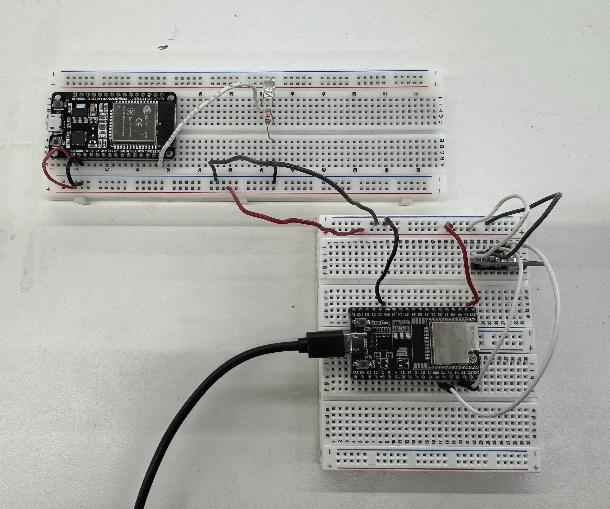
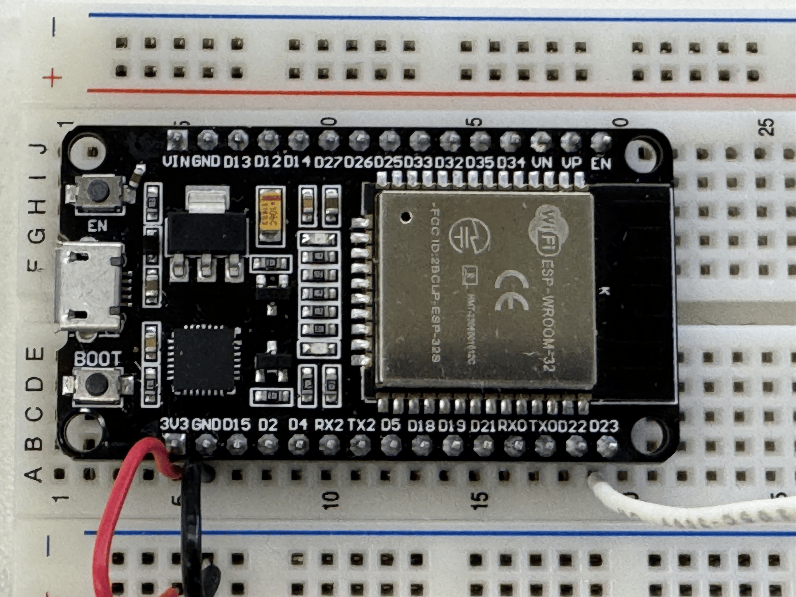
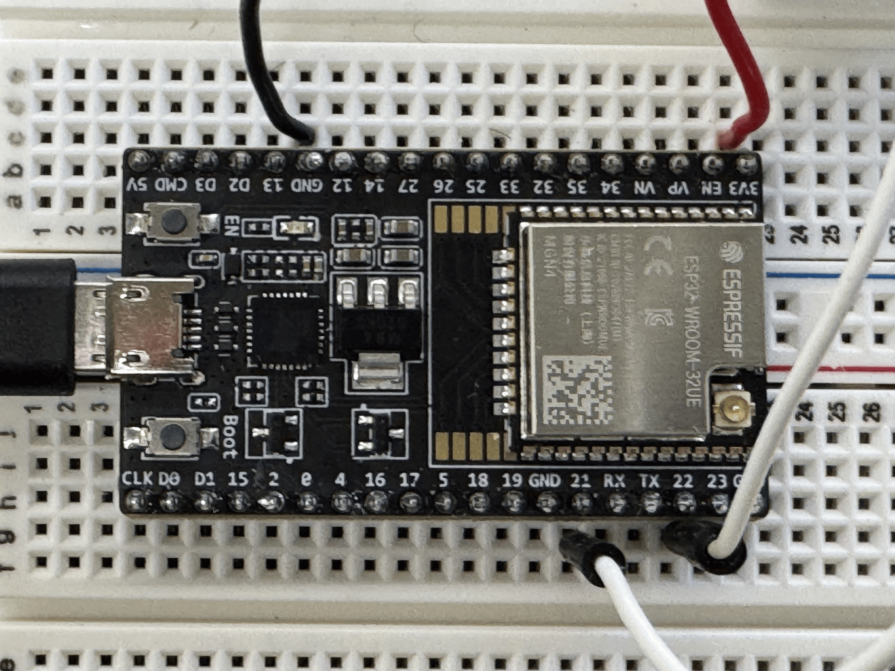
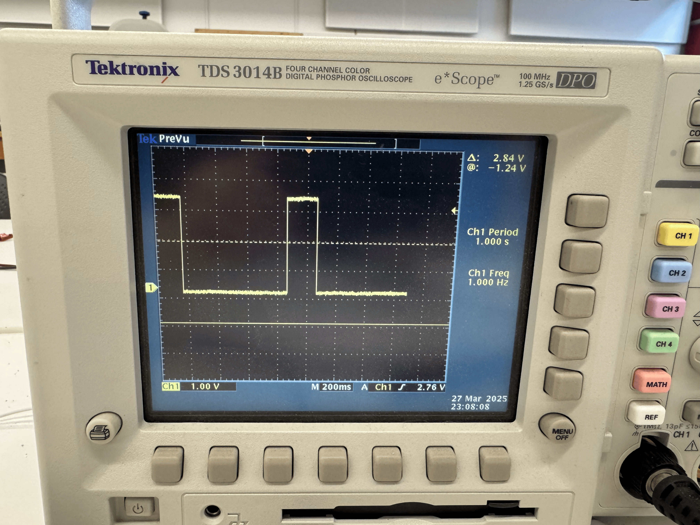
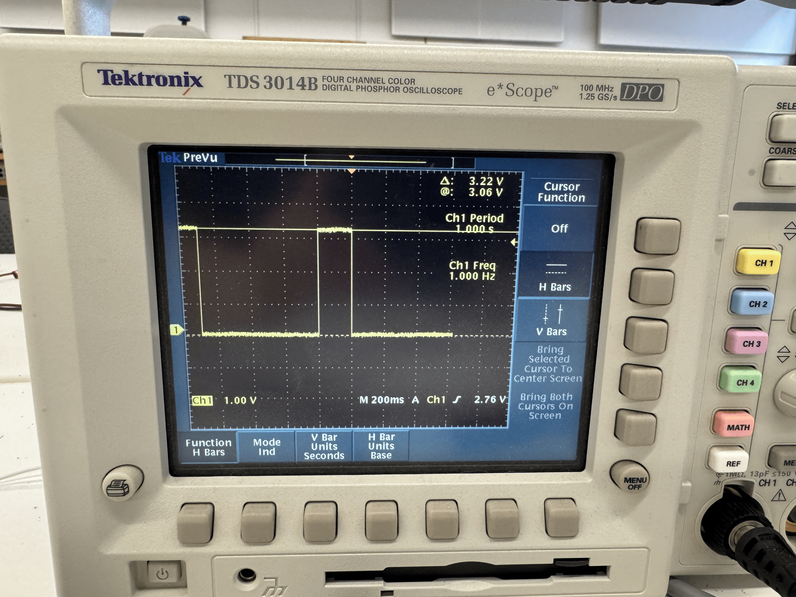
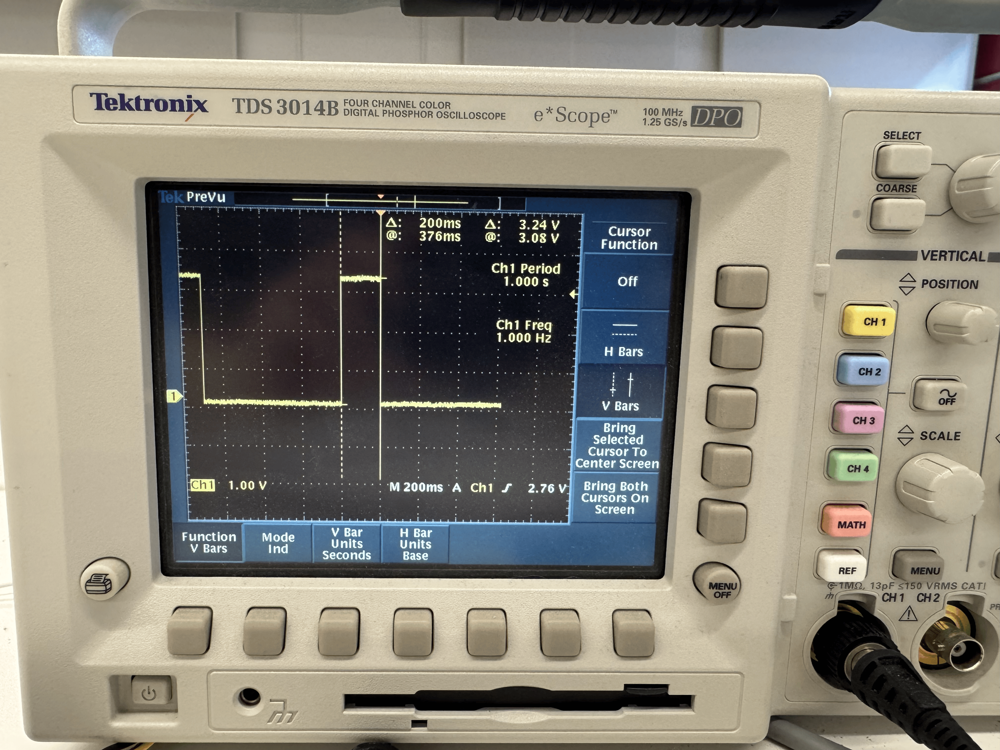

<div class="textcontainer">
<p class="margin"> </p>
<h3>Week 7: Electronic Outputs</h3>
<p><br></p>
<h4>Part 1: Minimum Viable Product</h4>
We're asked to make a serious attempt at the most challenging/intimidating aspect of the final project.
We should include at least one input and one output device, and also write a microcontroller program to integrates at least one input device and one output device.
<p><br></p>
<div class="video-container">
<video controls>
<source src="presentation.mp4" type="video/mp4">
Your browser does not support the video tag.
</video>
</div>
<p><br></p>
The hardest part I wanted to do set up communication between two microcontrollers. This is because
one microcontroller in the wand will send a signal to another microcontroller to turn on a light.
<p><br></p>
I first started by setting up the general circuitry of how my microcontrollers will work.
Right now, they are connected by two breadboards solely for power purposes. In the real
situation, both will be operated by batteries and so will separate.
Microcontroller 1, the sender, is connected to an accelerometer.
Microcontroller 2, the receiver is connected to a LED + resistor circuit.
Here are all the materials you will need. I also include pictures. The blown up pictures
help with knowing where to put the wires into the pins.
<p><br></p>
<ol>
<li>2 ESP32 Microcontrollers (I used an ESP32 and an Espressif ESP32)</li>
<li>1 ITG/MPU Accelerometer</li>
<li>1 Resistor (1k<span>&#8486;</span> is sufficient)</li>
<li>1 LED</li>
<li>Lots of wires (8 for the accelerometer, and more for power)</li>
<li>Arduino IDE</li>
<li>1 ESP32 plug-in cable (this will connect one ESP32 to your computer)</li>
</ol>
<p><br></p>
<p></p>
<p><br></p>
<div class="img-container">
<p></p>
<p></p>
</div>
<p><br></p>
Now, with these materials, the first thing you need to do is find out the MAC address
of the receiver ESP32. <a href="https://randomnerdtutorials.com/esp-now-esp32-arduino-ide/">This</a>
tutorial offers a great explanation for how to do one-way communication, including finding the MAC
address. I pasted it below for convenience. Upload this code by connecting your computer
to the receiver ESP32. Open the Serial Monitor on Arduino IDE when has uploaded
(you may need to 'boot' then 'enable' the ESP32 to get it to show up more than once) to get the MAC
address.
<p><br></p>
<div class="code-box">
<pre><code class="language-arduino">
#include <WiFi.h>
#include <esp_wifi.h>
void readMacAddress(){
uint8_t baseMac[6];
esp_err_t ret = esp_wifi_get_mac(WIFI_IF_STA, baseMac);
if (ret == ESP_OK) {
Serial.printf("%02x:%02x:%02x:%02x:%02x:%02x\n",
baseMac[0], baseMac[1], baseMac[2],
baseMac[3], baseMac[4], baseMac[5]);
} else {
Serial.println("Failed to read MAC address");
}
}
void setup(){
Serial.begin(115200);
WiFi.mode(WIFI_STA);
WiFi.STA.begin();
Serial.print("[DEFAULT] ESP32 Board MAC Address: ");
readMacAddress();
}
void loop(){
}
</code></pre>
</div>
<p><br></p>
Next, open a new Arduino IDE file, paste this code into the file, and upload it
to the same receiver ESP32.
<p><br></p>
<div class="code-box">
<pre><code class="language-arduino">
// PHYS 70: MICROCONTROLLER RECEIVER
// Imports and Installs
#include esp_now.h
#include WiFi.h
// Variables
const int ledPin = 23;
typedef struct struct_message {
float a;
float b;
float c;
} struct_message;
struct_message myData;
// Class Definition
class DataRecv {
private:
int ledPin;
int threshold;
unsigned long lastTime = 0;
const unsigned long interval = 10;
public:
DataRecv(int ledPin, int threshold) {
ledPin = ledPin;
threshold = threshold;
pinMode(ledPin, OUTPUT);
}
static void OnDataRecv(const uint8_t *mac, const uint8_t *incomingData, int len) {
// Process data when data is received
// Print out result, and if high enough, turn on LED
// Otherwise, turn off LED
memcpy(&myData, incomingData, sizeof(myData));
Serial.print("Bytes Received: ");
Serial.println(len);
Serial.print("Acceleration X: ");
Serial.println(myData.a);
lastTime = millis();
if (myData.a >= threshold) {
Serial.println("Low - LED OFF");
digitalWrite(ledPin, LOW);
} else {
Serial.println("High - LED ON");
digitalWrite(ledPin, HIGH);
while (millis() - lastTime < interval) {
// Do nothing, just wait/let it stay high for a while
}
lastTime = millis();
digitalWrite(ledPin, LOW);
}
}
};
// Create Receiver Instance
DataRecv receiver(ledPin, 0);
void setup() {
// Initialize Serial Monitor
Serial.begin(115200);
// Initialize WiFi for ESP-NOW
WiFi.mode(WIFI_STA);
if (esp_now_init() != ESP_OK) {
Serial.println("Error initializing ESP-NOW");
return;
}
// Register Receive Callback
esp_now_register_recv_cb(receiver.OnDataRecv);
}
void loop() {
if (millis() - lastRecvTime > timeout) {
digitalWrite(ledPin, LOW);
}
}
</code></pre>
</div>
<p><br></p>
Finally, open a new Arduino IDE file, paste this code into the file, and upload it
to the sender ESP32. You'll need to unplug the cable and plug it into the sender ESP32
to upload.
<p><br></p>
<div class="code-box">
<pre><code class="language-arduino">
// PHYS 70 Sender Microcontroller
// Imports and Installs
#include esp_now.h
#include WiFi.h
#include Adafruit_MPU6050.h
#include Adafruit_Sensor.h
// Variables
unsigned long lastTime = 0;
const unsigned long interval = 100;
// Class Definition
class ESPNowTransmitter {
private:
// Define variables private to Class
uint8_t broadcastAddress[6] = {0xC0, 0x5D, 0x89, 0xAF, 0xE8, 0x6C};
struct struct_message {
float a;
float b;
float c;
} myData;
Adafruit_MPU6050 mpu;
esp_now_peer_info_t peerInfo;
unsigned long lastTimeESPNow = 0;
const unsigned long intervalESPNow = 10;
public:
ESPNowTransmitter() {
// Constructor
}
void begin() {
// Initialize Serial, Wifi, ESPNow, and MPU
Serial.begin(115200);
initWiFi();
initESPNow();
initMPU();
}
void sendData() {
// Package data from MPU, then send
sensors_event_t a, g, temp;
mpu.getEvent(&a, &g, &temp);
myData.a = a.acceleration.x;
myData.b = a.acceleration.y;
myData.c = a.acceleration.z;
Serial.print("Acceleration X: ");
Serial.print(myData.a);
Serial.print(", Y: ");
Serial.print(myData.b);
Serial.print(", Z: ");
Serial.println(myData.c);
esp_err_t result = esp_now_send(broadcastAddress, (uint8_t *)&myData, sizeof(myData));
if (result == ESP_OK) {
Serial.println("Success sending the data");
}
}
private:
void initWiFi() {
// Initialize WiFi
WiFi.mode(WIFI_STA);
}
void initESPNow() {
// Initialize ESPNow
// Once ESPNow is successfully Init, register for Send CB to
// get the status of Trasnmitted packet
if (esp_now_init() != ESP_OK) {
Serial.println("Error initializing ESP-NOW");
return;
}
esp_now_register_send_cb(OnDataSent);
memcpy(peerInfo.peer_addr, broadcastAddress, 6);
peerInfo.channel = 0;
peerInfo.encrypt = false;
if (esp_now_add_peer(&peerInfo) != ESP_OK) {
Serial.println("Failed to add peer");
return;
}
}
void initMPU() {
// If we have not found the MPU, wait until we have
// Once we have, set parameters
while (!mpu.begin()) {
if (millis() - lastTimeESPNow >= intervalESPNow) {
lastTimeESPNow = millis();
Serial.println("Failed to find MPU6050 chip");
}
}
Serial.println("Successfully found MPU6050 chip");
mpu.setAccelerometerRange(MPU6050_RANGE_8_G);
mpu.setGyroRange(MPU6050_RANGE_500_DEG);
mpu.setFilterBandwidth(MPU6050_BAND_5_HZ);
}
static void OnDataSent(const uint8_t *mac_addr, esp_now_send_status_t status) {
// Did we make a successful delivery to receiver?
Serial.println(status == ESP_NOW_SEND_SUCCESS ? "Delivery Success" : "Delivery Fail");
}
};
// Create an instance of the class
ESPNowTransmitter espNowTransmitter;
void setup() {
espNowTransmitter.begin();
}
void loop() {
if (millis() - lastTime >= interval) {
lastTime = millis();
espNowTransmitter.sendData();
}
}
</code></pre>
</div>
<p><br></p>
By this point, feel free to test it out! Plug the cable either into the receiver or the sender,
whichever one you prefer to watch the data on the Serial monitor, and play around with the thresholds
to make the light go bright.
<p><br></p>
<div class="video-container">
<video controls>
<source src="presentation.mp4" type="video/mp4">
Your browser does not support the video tag.
</video>
</div>
<p><br></p>
<h4>Part 2: Oscilloscope</h4>
We're asked to use an oscilloscope to discover the time domain at which your output device is operating.
Is it on a fixed clock? What's its speed? Share images and describe your findings.
<p><br></p>
I hooked up the circuit with the oscilloscope prong. The power handle was attached to the LED pin going into ID 23.
The ground handle was attached to one of the black/grey ground wire. Then, I connected the circuit to my computer
so it got actual power. I moved around the 'wand' part of the circuit to turn on and off the LED light, which in
turn would show up on the oscilloscope as periods of 'on' and 'off'.
<p><br></p>
<p></p>
<p><br></p>
<div class="img-container">
<p></p>
<p></p>
</div>
<p><br></p>
The time domain is unique in that it is what I choose for it. In other words, I can flick the wand at any rate at any time.
I noted that the amount of time the LED was on was 200ms per 'flick'. The height at full power is 3.22V, which
makes sense, as I have the power at 3.3V and the LED circuit includes a resistor.
<p><br></p>
<p><br></p>
</div>